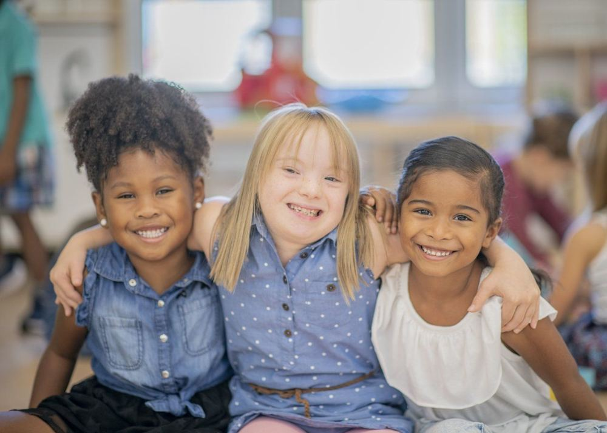

Por que a inclusão importa
Da sala de aula ao mercado de trabalho: por que este projeto trata a inclusão como o único assunto que importa — e para onde ir a partir daqui.
Um projeto de inclusão só faz sentido quando ele mesmo não exclui ninguém no caminho — nem no design da interface, nem na forma como a equipe que o constrói se organiza.
Princípio central do projeto ConvivePor que a inclusão é importante na escola
A escola é, para a maioria das pessoas, o primeiro espaço público de convivência prolongada com quem é diferente delas — em corpo, em forma de aprender, em cultura, em ritmo. É também onde se formam, cedo, as ideias que uma pessoa vai carregar sobre quem "pertence" e quem não pertence a um espaço. Por isso, uma escola inclusiva não beneficia só o aluno com deficiência: ela forma toda uma geração acostumada a conviver com a diferença como algo normal, não como exceção.

Do ponto de vista prático, incluir na escola significa remover barreiras concretas: material didático que também exista em áudio para quem tem dislexia ou baixa visão, avaliações que meçam conhecimento e não a velocidade de escrita de quem tem dificuldade motora, comunicação visual para alunos surdos, ambientes previsíveis para alunos autistas.
É exatamente essa lacuna que o Convive tenta preencher: transformar texto escrito em áudio para que a leitura deixe de ser uma barreira e passe a ser um caminho aberto a qualquer estudante, independente de como ele processa a informação.
Para o aluno
Ganha autonomia para estudar no seu próprio ritmo, sem depender exclusivamente de outra pessoa para ler ou explicar o conteúdo.
Para o professor
Ganha uma ferramenta a mais para diversificar como o conteúdo chega até turmas com necessidades diferentes, sem precisar recriar material do zero.
Para a turma
Aprende, na prática e não na teoria, que acessibilidade não é favor — é parte de como um ambiente bem projetado deveria funcionar desde o início.
O papel dos professores na inclusão
Nenhuma plataforma substitui o professor — o máximo que a tecnologia faz é tirar obstáculos do caminho dele. Quem identifica que um aluno não está acompanhando por causa de uma barreira de leitura, de atenção ou de comunicação — e não por falta de esforço — é, na maior parte das vezes, o professor em sala.
Adaptar não é facilitar. Mudar o formato como o conteúdo chega até um aluno — em áudio, com mais tempo, com instruções divididas em passos — não é reduzir a exigência acadêmica. É garantir que a dificuldade que o aluno enfrenta seja a do conteúdo, e não a do formato.
Isso exige formação: um professor não nasce sabendo identificar se uma dificuldade vem de dislexia, de baixa visão não diagnosticada, de uma barreira emocional ou de desinteresse. A capacitação continuada da equipe pedagógica — e o apoio da coordenação da escola — são tão parte da inclusão quanto qualquer recurso técnico.
O que costuma ajudar: comunicação clara sobre o que se espera de cada atividade, mais de uma forma de entregar o mesmo conteúdo (texto, áudio, imagem), e feedback que aponte o que fazer a seguir — não só o que está errado.
O que tende a excluir, mesmo sem intenção: comparar publicamente o ritmo de alunos diferentes, tratar adaptação como "regra especial" em voz alta na frente da turma, ou presumir que todo aluno com uma mesma condição precisa exatamente do mesmo ajuste.
Inclusão na sala de aula não é uma via de mão única, do professor para o aluno. Funciona quando o aluno também tem espaço seguro para dizer "isso não está funcionando pra mim" sem medo de ser visto como incapaz — e quando o professor trata esse aviso como informação útil, não como desculpa. Essa troca constante é o que sustenta qualquer adaptação no dia a dia real de uma turma, muito mais do que qualquer material ou ferramenta isolada.
Por que a inclusão importa também no trabalho
A inclusão que se aprende — ou não se aprende — na escola se estende diretamente ao mercado de trabalho. Um estudante que cresce em um ambiente inclusivo tem mais chance de se tornar um profissional que projeta produtos, escreve textos e toma decisões pensando em quem usa aquilo depois. E um estudante com deficiência que teve acesso pleno à educação chega ao mercado de trabalho com as mesmas oportunidades de qualificação que qualquer outro.
Empresas cada vez mais reconhecem que acessibilidade digital não é um nicho: é um requisito de qualidade. Um site que não funciona com leitor de tela perde clientes, candidatos e colaboradores capazes — não porque eles não sabem fazer o trabalho, mas porque a ferramenta não foi construída para eles.
Existe uma diferença entre contratar alguém por obrigação legal e de fato criar condições para que essa pessoa produza, cresça e seja promovida como qualquer outro colaborador. A primeira cumpre uma cota; a segunda constrói uma equipe. Barreiras invisíveis — reuniões só presenciais, softwares internos incompatíveis com leitor de tela, processos seletivos com dinâmicas que dependem de agilidade física — bloqueiam a segunda mesmo quando a primeira já foi cumprida.
Por que tratar todo mundo igual nem sempre é justo
Oferecer exatamente a mesma coisa para todos parece justo — mas só funciona quando todos partem do mesmo ponto. Quando não partem, tratar igual mantém a desigualdade, só que agora com aparência de neutralidade.
Toda avaliação é só em texto escrito, para qualquer aluno, "porque é justo ser igual para todos". Um aluno cego não consegue nem começar a prova.
A avaliação mede o mesmo conhecimento, mas o aluno cego recebe o material em áudio ou Braille. O padrão de exigência é igual; o caminho até ele, não precisa ser.
Essa é a lógica por trás do Convive: o conteúdo continua sendo o mesmo conteúdo. Muda apenas o caminho até ele — de texto para áudio — para que a barreira de acesso deixe de decidir quem consegue aprender e quem não consegue.
O raciocínio continua em 3 frentes
Preconceito e desigualdade →
Estereótipo, preconceito, discriminação e capacitismo não são a mesma coisa — e a diferença importa.
Um consenso incompleto →
Por que esse tema ainda divide opiniões pelo mundo, e onde este projeto escolheu atuar.
O que diz a lei →
LBI, LDB, Lei de Libras e mais: a base legal por trás da acessibilidade escolar no Brasil.
Por que a inclusão é importante — socialmente e digitalmente
Inclusão é o princípio de que espaços, produtos e serviços devem ser construídos para funcionar com a diversidade real das pessoas, não com uma versão média e imaginária delas. Socialmente, isso significa garantir que ninguém precise "se encaixar" para participar da vida em comunidade. Digitalmente, significa que um site, um aplicativo ou uma plataforma de ensino não pode, sem querer, fechar a porta para quem enxerga, ouve, se movimenta ou processa informação de um jeito diferente do considerado "padrão".
A exclusão raramente é proposital — na maioria das vezes, ela é resultado de decisões tomadas sem pensar em quem fica de fora: um contraste de cores baixo demais, um botão pequeno demais, um vídeo sem legenda, um site que só funciona com mouse. Cada uma dessas escolhas parece pequena isoladamente, mas juntas formam barreiras reais.
Pensar em inclusão desde o início de um projeto — e não como um remendo depois de pronto — é o que separa uma tecnologia que serve a poucos de uma que serve a todos.
~1 bilhão de pessoas
Cerca de 15% da população mundial vive com algum tipo de deficiência, segundo a Organização Mundial da Saúde (OMS).
14,4 milhões no Brasil
7,3% da população brasileira com 2 anos ou mais tem alguma deficiência, de acordo com o Censo Demográfico 2022 (IBGE).
7,4% × 19,5%
Só 7,4% das pessoas com deficiência no Brasil concluíram o ensino superior, contra 19,5% das pessoas sem deficiência (IBGE, 2022) — a diferença que este projeto tenta reduzir.